Wastewater treatment project "registers promising results"
Micro WatTS, a 2.5 million euro Interreg Italia-Malta project, developed prototypes that treat greywater and render it safe for reuse.
Stay up to date with the latest developments, events, and publications from the Micro WatTS project.
Micro WatTS, a 2.5 million euro Interreg Italia-Malta project, developed prototypes that treat greywater and render it safe for reuse.
Econetique, one of the SMEs taking part in the Micro WatTs project, has issued the following tenders.
Atomic Layer Deposition is an extremely flexible process allowing for the deposition of photocatalytic materials on a variety of substrates.
The MicroWatTs project was presented to the Sicilian public on the 27th November 2020 as part of Catania's European Researchers' Night activities.
Micro WatTS is developing a micro greywater treatment system and is offering free advisory services to small and medium enterprises.
Micro Wastewater Treatment System using Photocatalytic Surfaces (Micro WatTS) è un progetto europeo co-finanziato dal programma INTERREG V.A. Italia-Malta.
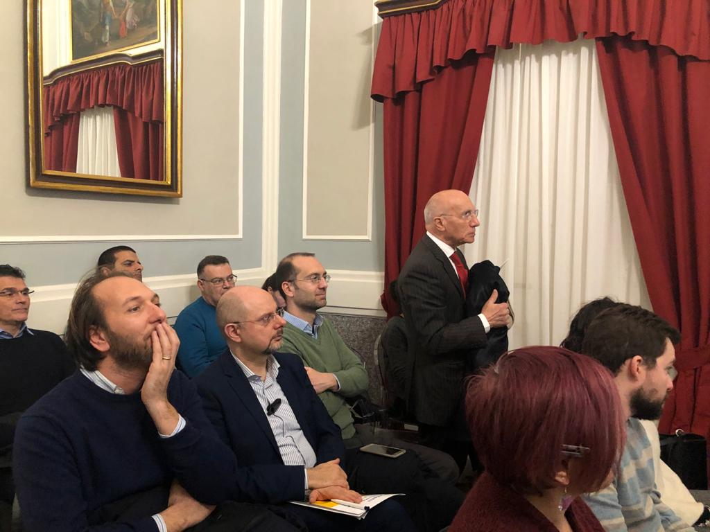
The Seminar for Sicilian Enterprises hosted by CNR was held at the Dimora De Mauro in Catania on the 29th January 2020.
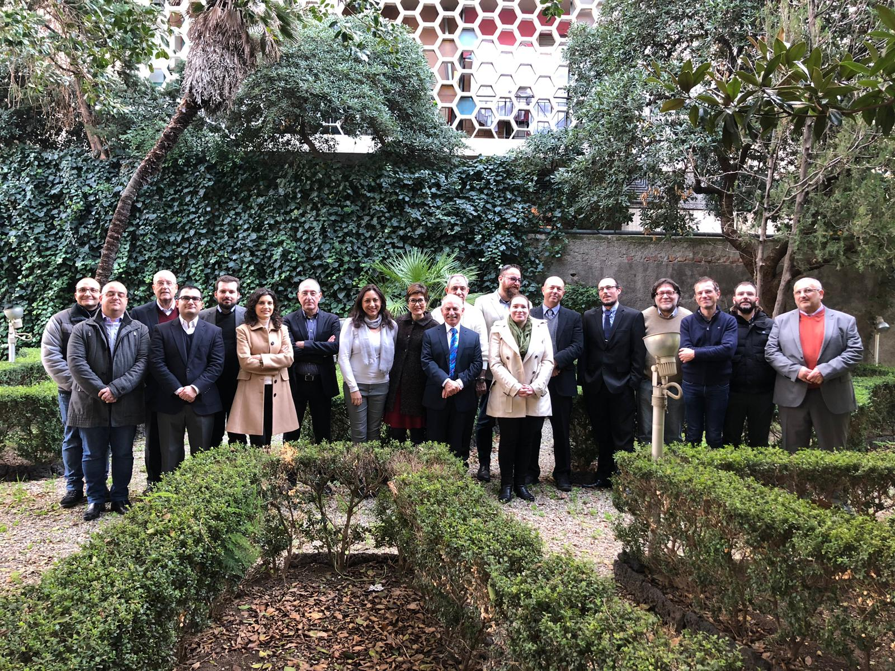
The sixth steering committee meeting was held at the Museo Della Rappresentazione in Catania on the 27th of January 2020.
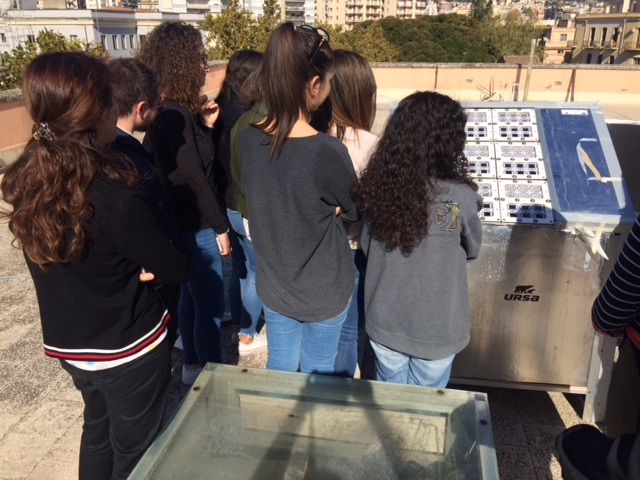
A seminar for students and researchers in the MicroWatTS project was held at the Biological Sciences Department within the University of Catania.
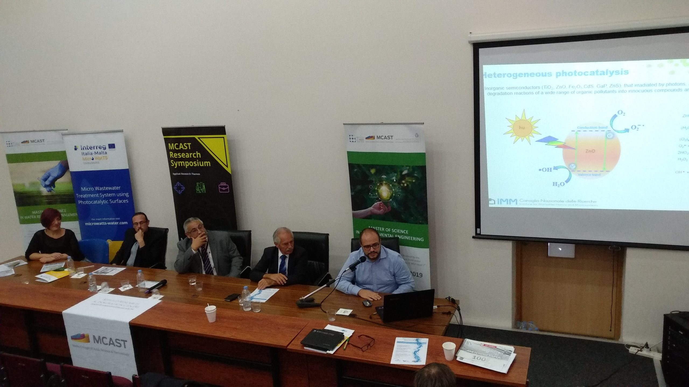
The fourth national water conference was held on the 18th of October 2019 at the Institute of Applied Sciences within MCAST.
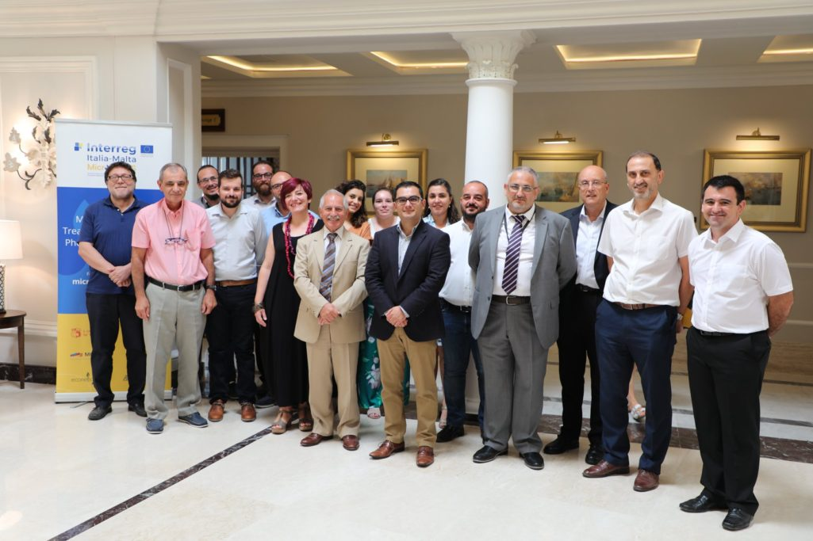
The second Advisory Board meeting and fifth Steering Committee meeting took place on 16th September 2019 at the Phoenicia Hotel in Malta.
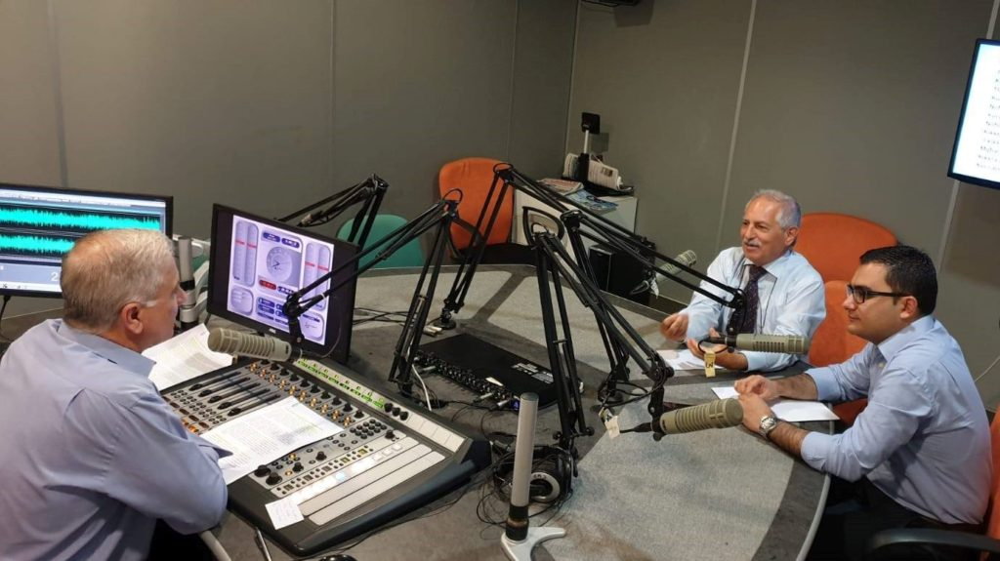
On the 3rd July 2019 University of Malta researchers were invited to Radju Malta's Newsline to discuss the project.
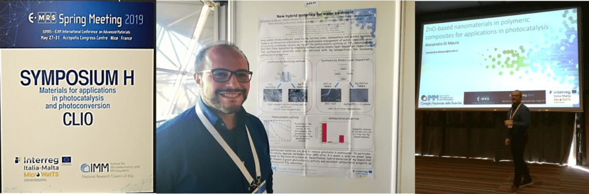
The 37th Spring Meeting of the European Materials Research Society (E-MRS) was held from May 27 to 31, 2019, in Nice, France.
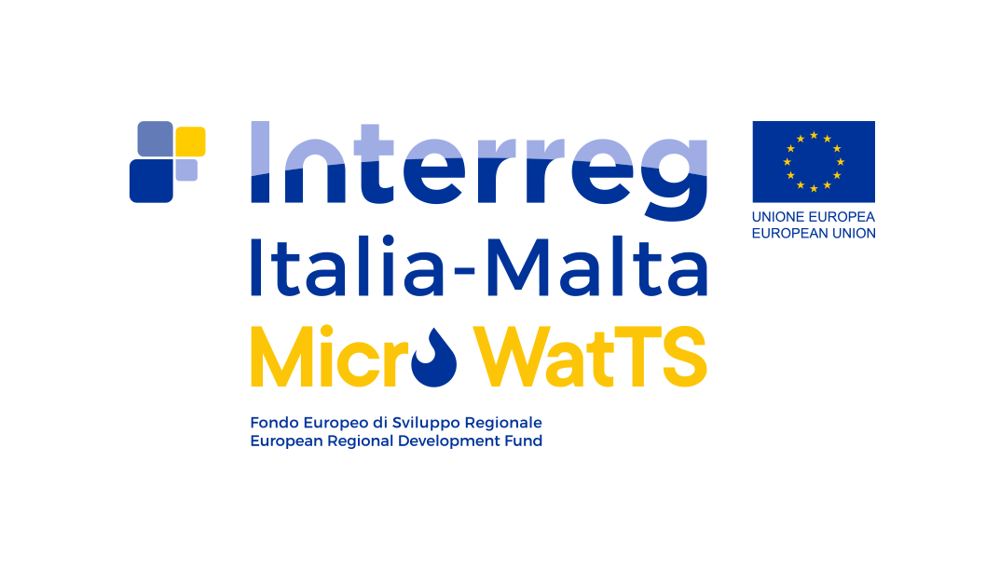
Applications are invited for a full-time Research Support Officer to work on the Micro WatTS project.

Dr. Ing. Stephen Abela delivered a presentation at a seminar titled 'Green Skills Competencies in the Construction industry'.
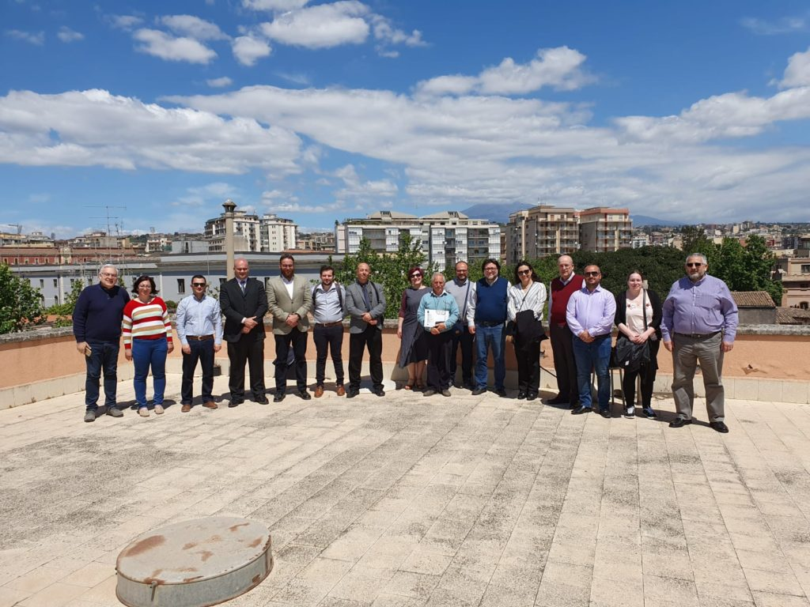
The fourth steering committee meeting took place at the Museo Diocesano in Catania on 6th May 2019.
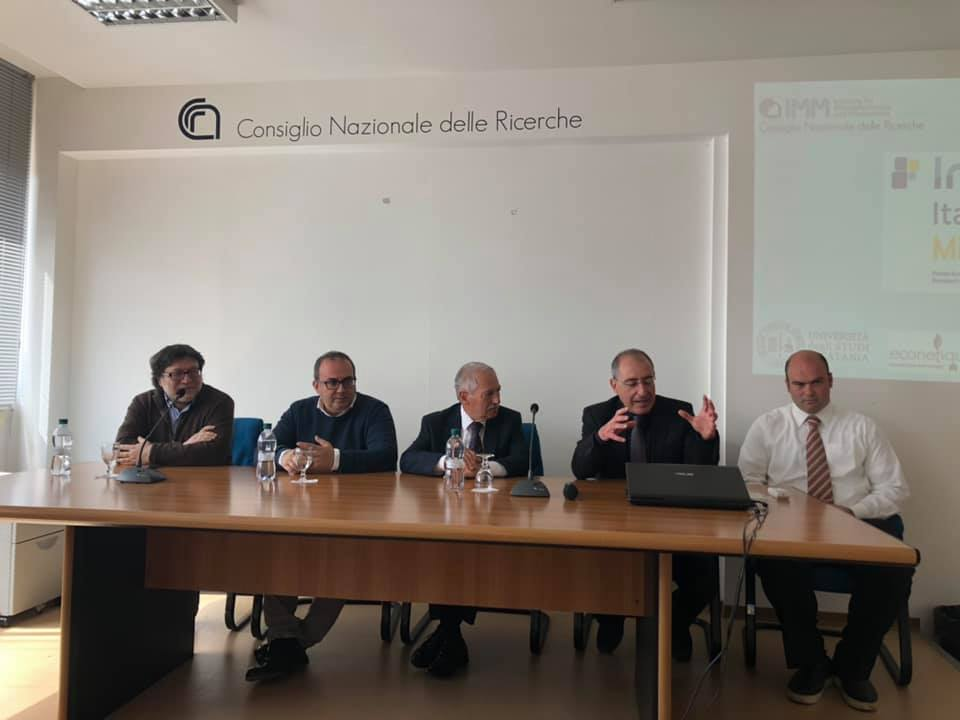
The potential impact and benefits of the Micro WatTs project were presented to the media on the 28th March 2019 at CNR.
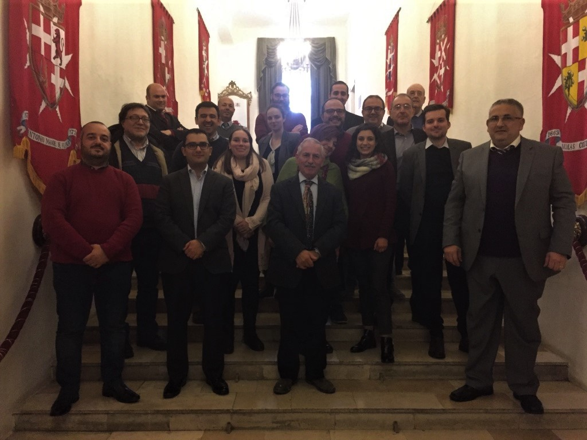
The meeting took place on the 21st of January 2019 at the Mediterranean Conference Centre, Valletta, hosted by the MCAST team.
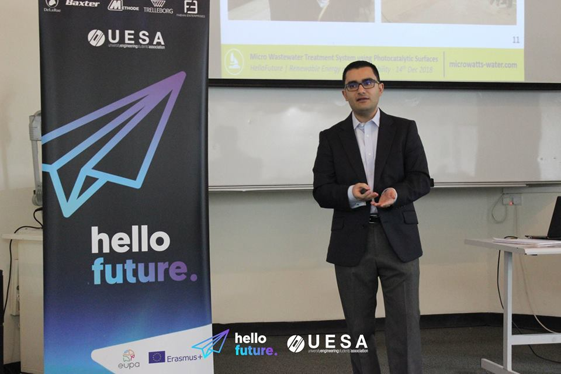
On the 14th of December 2018 the MicroWatTs team was invited to discuss the project at the Hello Future Seminar organised by UESA.
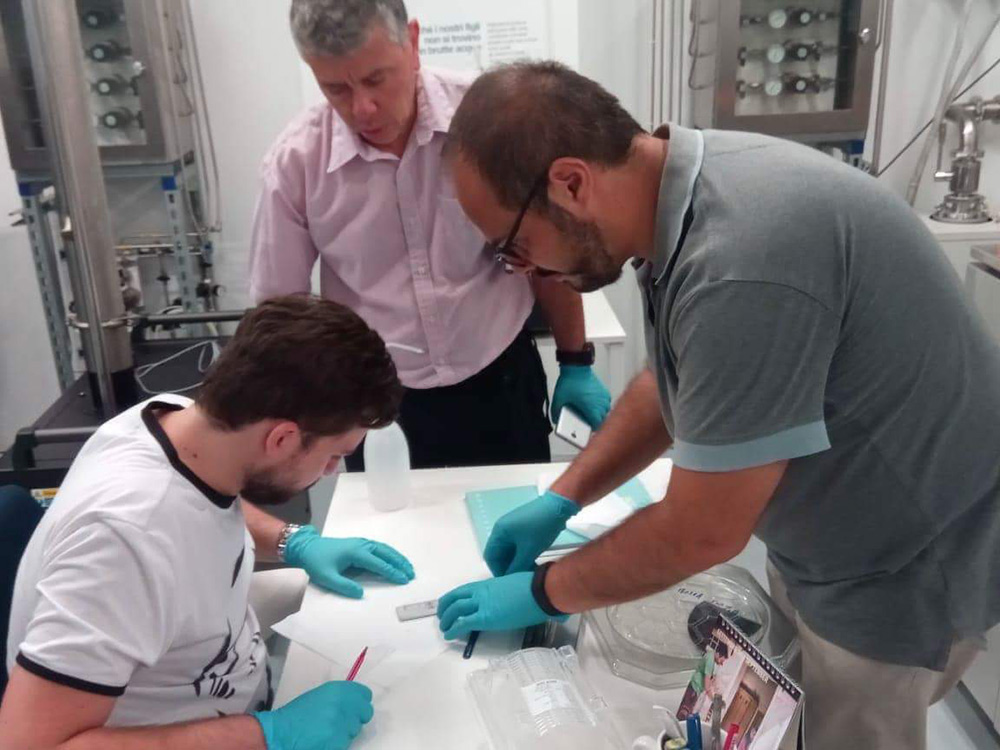
Project partners took part in technology transfer sessions between 18-21 September 2018 at CNR to familiarise partners with synthesis and testing of photocatalytic materials.
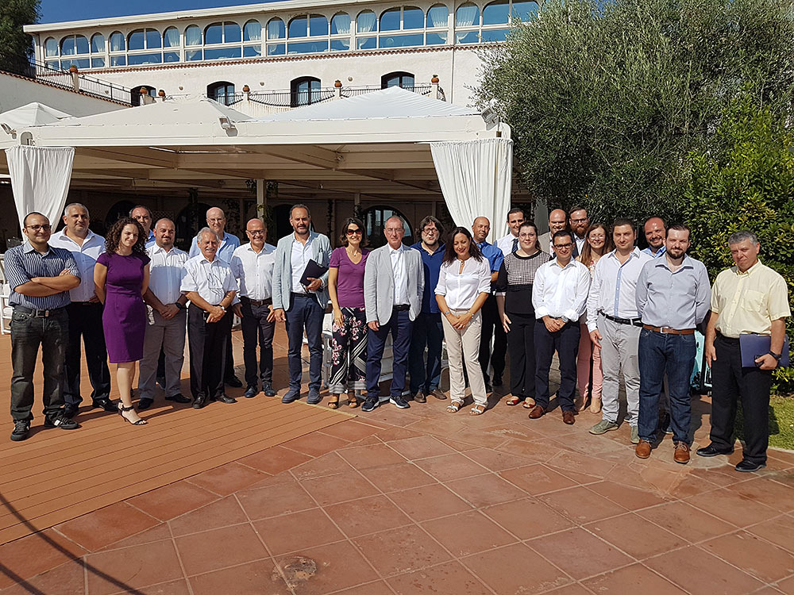
The meeting took place on the 17th of September 2018 at the Grand Hotel Baia Verde, Catania, hosted by CNR.
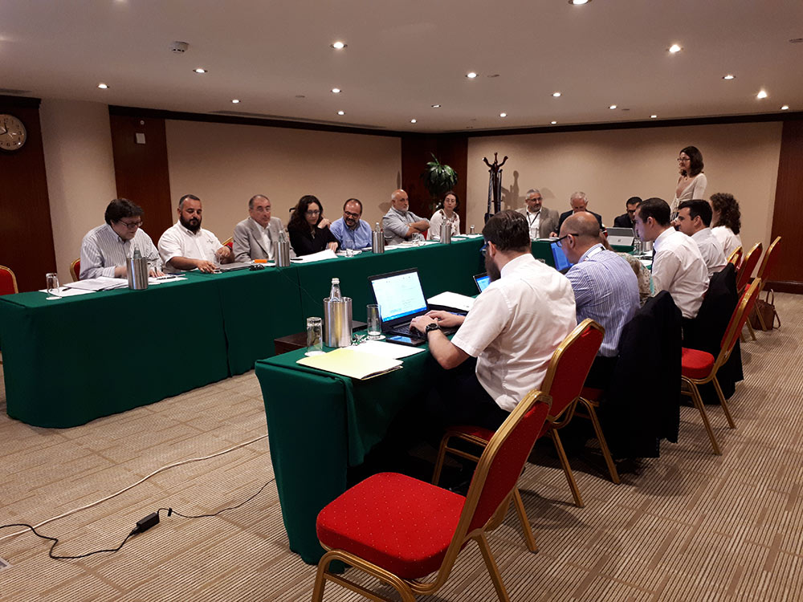
On the 29th May 2018 the MicroWatTS team met at the Hotel Excelsior, Malta for the first steering committee meeting.
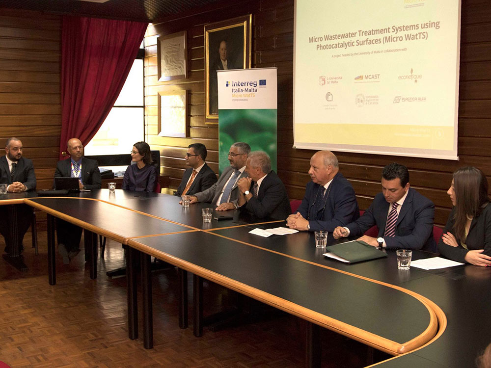
The project was launched officially and presented to the media on the 26th of July 2018, highlighting how photocatalytic reactors could help households and small enterprises.